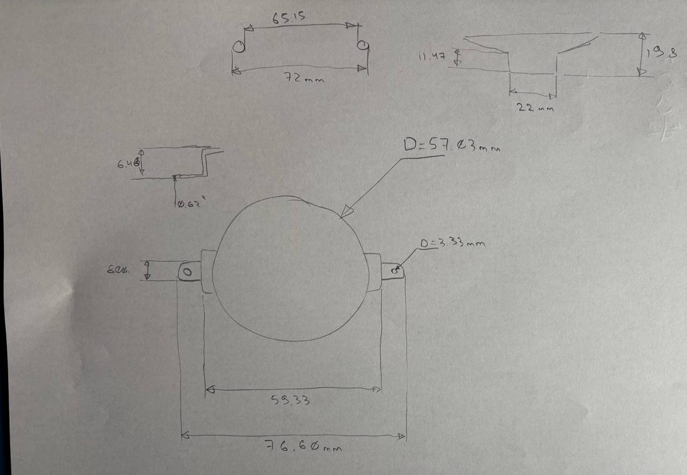
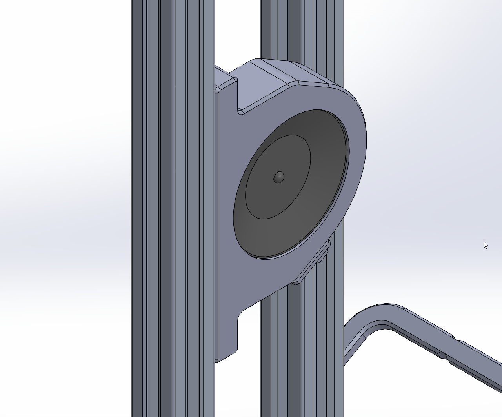
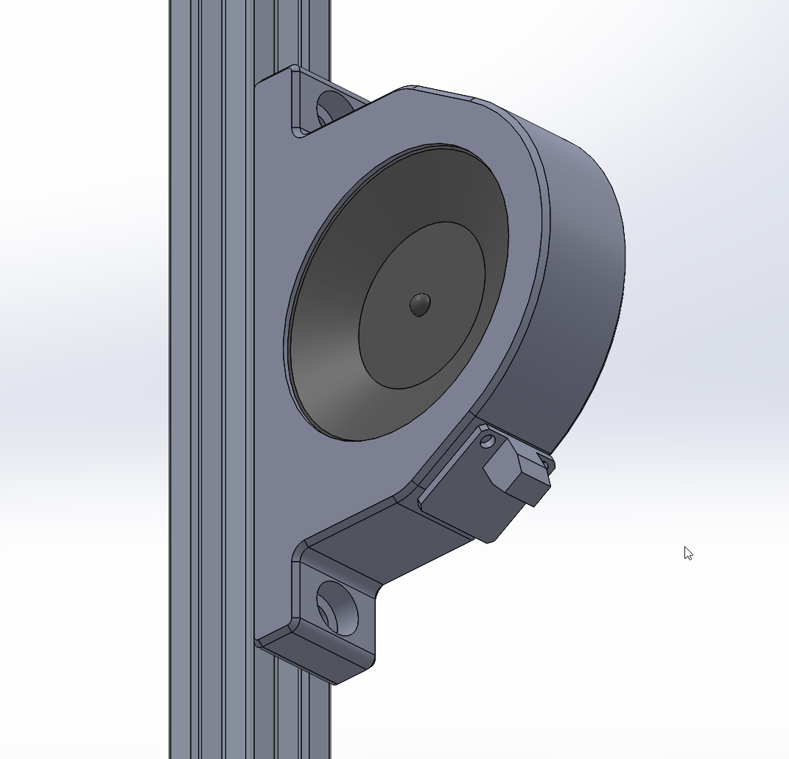

Speaker Mount
I measured the speaker and prepared a dimensioned drawing.

I then designed the speaker mount.


I initially consulted Adafruit's MAX98357 module documentation for the amplifier dimensions[1]. However, the physical module available for this project differs from the Adafruit version, so I used measurements from the actual hardware instead.
I also asked Nick to print a Raspberry Pi 4 enclosure designed for mounting to 2020 aluminium extrusion[2].